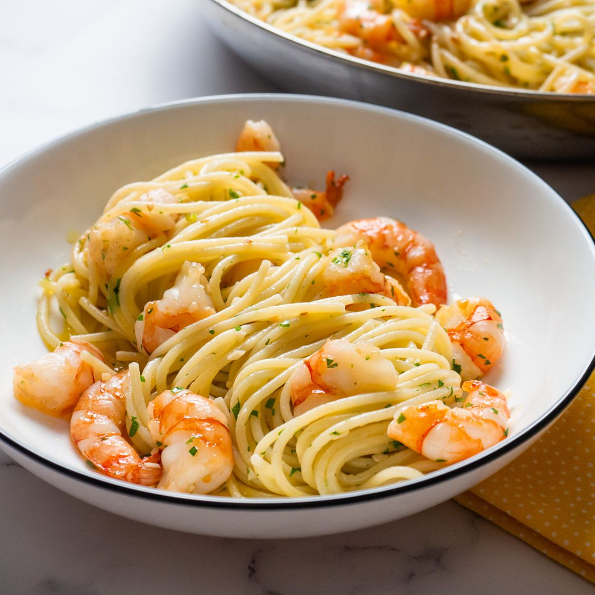

Shrimp Scampi

Description
Link to youtube video
The secret to this is the shrimp stock you make with the shells, and instead of sauteeing the shrimp we're going to poach them to keep their texture soft and silky
1 1/2 lbs of Jumbo shrimp, shell on
3 Tbsp salt
2 Tbsp sugar
Olive oil
1 Cup White Whine
4 sprig of thymes
8 cloves of sliced (not minced) garlic
1/2 tsp red chili flakes
1/4 tsp black pepper
3 Tbsp Lemon Juice
1 tsp corn starch
4 tbsp butter
1 tbsp chopped parsley
6 ounces of pasta, preferrable thin noodle
freshly grated parmesan cheese
- Peel shrimp and save shells
- Create a brine with 1 quart of water, 2 tbsp sugar and 3 tbsp of salt and let the shrimp sit in the brine, covered in the fridge, for 15 mins
- Pat shrimp dry
- 1 tbsp of oil, heated, and cook shrimp shells until brown and white spots on shells are prominent
- Remove from heat and add 1 cup of white wine, and 4 sprigs of thyme
- Return to heat and let simmer for 5 minutes
- Strain shells from stock, making sure to squeeze every last ounce of stock from the shells before discarding
- Heat 1 tbsp olive oil over medium high heat, and sautee garlic and add chili and pepper for 3-5 minutes
- Add shrimp stock to pan, followed by shrimp and poach shrimp for five minutes, covered, stirring occasionally until fully cooked
- Remove pan from heat and remove shrimp from pan; set aside
- Combine lemon juice and corn starch, return pan to medium heat, stirring in mixture and cook for 1 minute
- Remove from heat and stir inbutter and parsley
- Add shrimp to sauce, serve with noodles and parmesan cheese